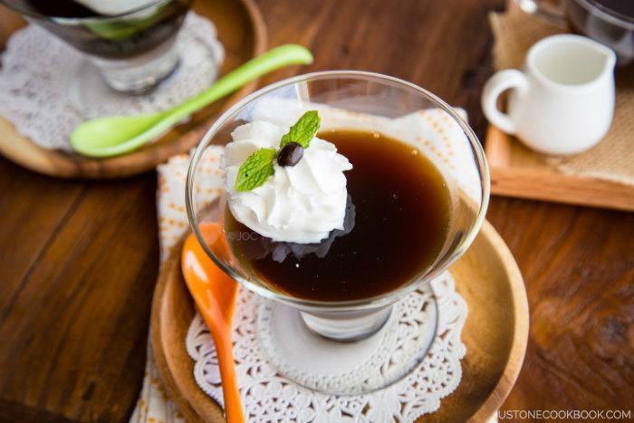

Coffee Jelly
Prep : 10 min | Cook : 5 min
--------------------------------------------------------
Ingredient List:
1 TB Gelatin (1 package)
4 TB Water
2 Cups Coffee
2 TB Brown Sugar
Instructions:
1.) Mix gelatin with water.
2.) Bring coffee and sugar to a low boil on medium heat.
3.) Remove from heat and mix gelatin in.
4.) Pour into dishes and refrigerate.